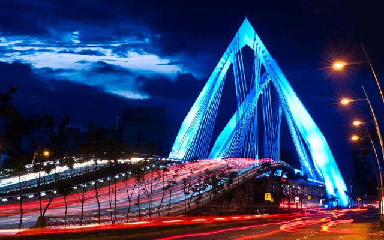
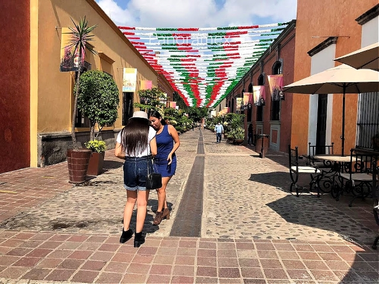
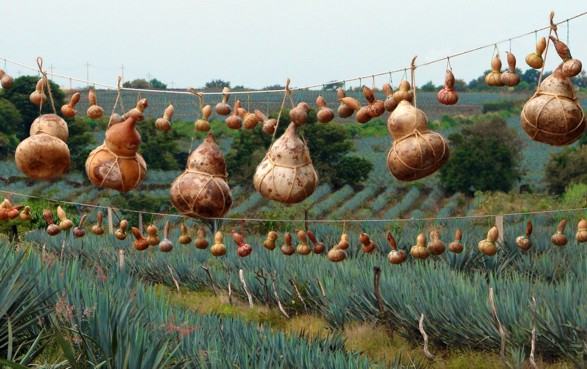
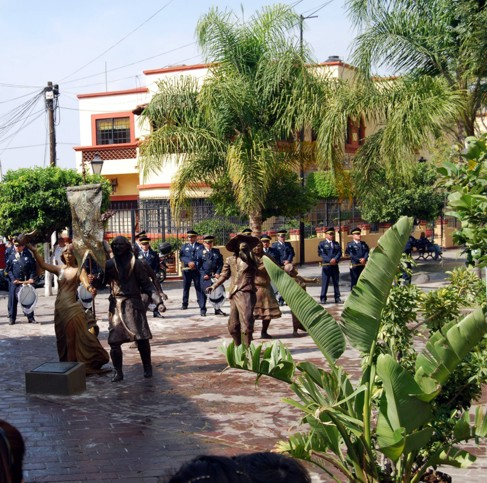
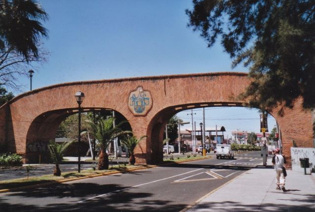

Blog
Explora los rincones mas fascinantes de Guadalajara con nuestros tours cuidadosamente diseñados para ofrecerte una experiencia inolvidable llena de historia, cultura y aventura.
Visita Guadalajara
Hay varias razones convincentes para visitar Guadalajara. Aquí hay algunas:
1. Cultura: Guadalajara es conocida como la cuna del mariachi y el tequila, dos elementos icónicos de la cultura mexicana. Puedes sumergirte en la rica cultura de la ciudad asistiendo a espectáculos de mariachi en la Plaza de los Mariachis, visitando destilerías de tequila y explorando sus numerosos museos y galerías de arte.
2. Arquitectura: La ciudad está llena de impresionantes ejemplos de arquitectura colonial y neoclásica, así como de edificios modernos y contemporáneos. Puedes admirar la majestuosa Catedral de Guadalajara, el Instituto Cultural Cabañas, declarado Patrimonio de la Humanidad por la UNESCO, y el Teatro Degollado, entre otros.
3 Gastronomía: Guadalajara es famosa por su deliciosa comida tradicional mexicana. Puedes disfrutar de platillos típicos como la birria, el pozole, las tortas ahogadas y los dulces típicos como las jericallas y las tortas de Tlaquepaque. Además, la ciudad cuenta con una próspera escena gastronómica que incluye restaurantes de alta cocina, food trucks y mercados locales.
4. Naturaleza: A las afueras de Guadalajara encontrarás impresionantes paisajes naturales, como el Bosque La Primavera, ideal para practicar senderismo y ciclismo de montaña, y el Parque Nacional Nevado de Colima, donde puedes disfrutar de actividades al aire libre como el avistamiento de aves y el camping.
5. Fiestas y eventos: Guadalajara alberga una variedad de festivales y eventos a lo largo del año, desde la Feria Internacional del Libro de Guadalajara, la segunda feria del libro más grande del mundo, hasta la Feria de Tonalá, conocida por su artesanía y gastronomía.
En resumen, Guadalajara ofrece una mezcla única de historia, cultura, gastronomía y naturaleza que la convierte en un destino fascinante para visitar.

Conocer nuestra ciudad es una experiencia maravillosa, llena de sorpresas e inesperadas porque al dar la vuelta en algún rincón encontrarás algo sorprendente.
Guadalajara y sus ciudades circundantes ofrecen una gran cantidad de sitios culturales e históricos para explorar. Tlaquepaque es una encantadora ciudad colonial a pocos kilómetros de Guadalajara que es famosa por su hermosa arquitectura, galerías de arte y artesanías. Estos son algunos de los mejores lugares para ver en Tlaquepaque
Tours en Guadalajara está lleno de muchos monumentos, e importadores y edificios reconocidos, como la Rotonda de Hombres Ilustres, donde las jalisciencias más destacadas descansan en paz, y que han marcado su lugar en la historia.
Esta hermosa iglesia se encuentra en el corazón de Tlaquepaque y es un excelente ejemplo de la arquitectura de la época colonial. La iglesia cuenta con hermosos frescos y un impresionante altar, y es una visita obligada para cualquier persona interesada en la historia y la arquitectura.
Casa-Museo López Portillo este museo está ubicado en una hermosa mansión colonial y muestra la vida y obra del ex presidente mexicano José López Portillo. El museo presenta una colección de arte popular mexicano, así como fotografías y recuerdos de López Portillo en el cargo.
Al mismo tiempo, en el centro hay muchos otros lugares representativos de la ciudad. Las historias que estos lugares tienen en sí mismas son especiales porque marcan una leyenda urbana en nuestra ciudad.
También la vida de Guadalajara en la noche es un momento más que respetado: la vida nocturna en la ciudad es envidiable, hay lugares para todos.
Explore Tlaquepaque para disfrutar de esta encantadora ciudad a las afueras de Guadalajara es conocida por su hermosa arquitectura, artesanías tradicionales y deliciosa cocina. Pase una tarde navegando por las tiendas y galerías locales, probando el tequila y la cocina locales y disfrutando del ambiente vibrante.

Blue Agave un Spicies Endémico verdaderamente Mexicano
Agave es una antigua palabra griega que se refería a una diosa de la fertilidad. Hoy esta palabra se usa para nombrar una familia de plantas. En México, la diosa de la fertilidad se llamaba Mayahuel, la diosa de los 400 senos. Ella era conocida como el dios del pulque. Hay más de doscientas especies de agaves, pero solo cuatro de ellas son reconocidas para poder producir alcohol. De ellos, solo se sabe que uno hace tequila. El nombre de esta planta de agave es Tequilana Weber Agave blue. Azul porque cuando lo ves desde unos pocos pies de distancia parece que es azul. Lo que hace que parezca azul es esta capa que está en los tallos de la planta. Esta capa también ayuda a la planta a protegerla de los rayos del sol y la peste. Se llamaba Weber porque en la década de 1910 un científico llamado France Webber vino a nuestro país y nombró a la planta por su nombre.Antes de que la planta fuera renombrada, se la conocía como Mayahuel “ diosa púlca ”, ella sigue estando más fuertemente asociada con la planta como fuente, en lugar de pulque como producto final.
El agave es una planta única. Lo que lo hace tan especial son los años que lleva crecer y madurar. Esta planta tarda 12 años en crecer. Los Agaves más viejos reproducen timones, después de dos años de la edad de los timones se replantan. Después de que se replantan tenemos que esperar otros 10 años para poder cocinar y obtener al menos una gota de alcohol. Es mucho tiempo que tenemos que esperar, pero vale la pena esfuerzo. Cuando la planta está lista para ser jimada (cosechada), el jimador corta todos los tallos de dejar solo el corazón de la planta. El corazón de la planta parece una manzana de pino. Cuando la cosecha tiene suficientes manzanas de pino listas para una carga, cargan el camión y las transportan a la destilería para el proceso de cocción.
Una vez que llegan a la destilería, los pinos se cortan por la mitad antes de que los trabajadores los coloquen dentro de los hornos. Cada horno contiene hasta 22 toneladas de pinos y los cocina en un período de 12 a 14 horas. Luego, los pinos después de haber sido cocinados se someten al proceso de compresión. Aquí en este proceso es donde la máquina exprime todos los productos del pino. Los productos se llevan a un recipiente de acero para manchas. Cada contenedor es capaz de contener hasta 30.000 litros. Cuando el líquido está dentro de los contenedores ahora tenemos que esperar 36 horas para poder avanzar en el siguiente paso. El siguiente paso es la destilación.
En la destilación se obtiene el alcohol y el agua se separa. El líquido se coloca en las alambiques a una temperatura de 90 a 110. Pasamos por el proceso de destilación dos veces. Entre la razón por la que lo hacemos dos veces es porque en la primera vez solo obtenemos del 20 al 25% de alcohol, y en la segunda destilación obtenemos del 50 al 55% de alcohol.
Se necesita mucho tiempo para producir tequila y es por eso que creo que deberíamos aprender a apreciar el valor del tequila. Necesitamos conocer la forma correcta de beberlo y los diferentes tipos de tequilas.
Si usted está interesado en aprender más acerca de este tema fascitante y mirando en los secretos de cómo se obtienen los sabores, Estoy más que feliz de preparar una visita especial a una de las 120 destilerías de tequila en esta área.

Guadalajara Un Lugar Diferente para Descubrir
Descubrir nuestra ciudad es una experiencia maravillosa, lleno de sorpresas y situaciones inesperadas porque cuando te das la vuelta en algún rincón encontrarás algo increíble Guadalajara está llena de muchos monumentos y edificios importantes y reconocidos, como la rotonda de los hombres ilustres, lugar de descanso de los niños de Jalisco que marcó su lugar en la historia.
Al mismo tiempo en el centro hay muchos otros lugares representativos de la ciudad. Las historias narradas en estos lugares son especiales porque marcan una leyenda urbana en nuestra ciudad.
En Guadalajara, no solo puedes visitar monumentos, puedes encontrar la vida cotidiana de sus habitantes que te recibirán con calidez en sus vidas y podrás socializar.
Esculturas Vivas Tlaquepaque Nutters o Arte Contemporáneo?
Las obras de artistas contemporáneos han sido expuestas desde el American Center Paris, Francia, hasta el Museum of Modern Art, Nueva York, EE.UU. Las Favelas de Barcelona también ofrecen este espectáculo.
Este arte móvil, debo decir, Arte móvil, las esculturas estarán en Tlaquepaque en el centro de la ciudad a lo largo de la calle peatonal el viernes 3 de diciembre de 16:30 hrs – 20:30 hrs. En su expresión artística lleva el sol, el frío, la fatiga, el hambre y otros caprichos de la vida durante 4 horas.
A través de este arte corporal se transmiten una variedad de sentimientos. Con sus trajes, gestos y posición de sus cuerpos expresan ternura y crueldad, amor y odio, paz o violencia. Aunque la belleza está realmente en los ojos del espectador. . Nosotros mismos exploraremos nuestros rincones íntimos, como admirar un reflejo de nosotros en el espejo.
El campesino de la imagen nos da manzanas con ternura y simpatía, mientras que el hombre dormido nos presenta algo de ironía, el sabor agridulce de la vida. Ambos, aunque muy diferentes en sus expresiones, pretenden que nuestra visión es tan agradable en nuestro viaje por el mundo.
Su esfuerzo será apreciado por los transeúntes de Tlaquepaque, al menos uno de ellos estará fuera de la oficina de GDL Tours, Independencia 329, por lo que se necesitan consejos y su cooperación para estos artistas, se necesitan mimarlos para que continúen transmitiendo este arte contemporáneo.

Identidad de Tlaquepaque
Tlaquepaque fue nombrado por sus antepasados hace siglos. Surgió de la tierra montañosa, rica en arcilla, la misma tierra que dio a luz a maestros alfareros, lo que a su vez le da a Tlaquepaque su identidad y patrimonio.
El 25 de marzo de 1530 (un día histórico) que tuvo lugar en la tierra del reino de Tonala y todos los pueblos de los alrededores, donde los conquistadores españoles se levantaron en triunfo, de victoria.
Durante el período colonial, Tlaquepaque era conocido como San Pedro y formaba parte del Virreinato de Nueva Galicia. Confiando en los esfuerzos de los trabajadores nativos con talento, la corona española se animó por el desarrollo de la artesanía e introdujo nuevas técnicas en Europa y en todo el mundo, haciendo de esta una ciudad de producción de piso, azulejos y ladrillos, el más importante del siglo mundo Durante XVIII, mansiones neoclásicas ricas españolas y criollas construyeron su verano aquí, los artesanos locales estaban ganando reconocimiento en todo el virreinato por su capacidad para crear grandes piezas de cerámica.
No hay necesidad de profundizar demasiado para descubrir que debajo de la superficie de la tradición Tlaquepaque moderna que ha sobrevivido durante siglos, podemos observar esta tradición, simplemente caminando por las calles. Especialmente la calle peatonal (Independencia) Todas las galerías, hoteles, restaurantes, Ext ... son restos de antiguas granjas y mansiones.
Casa Histórica que veremos durante el recorrido es una estructura arquitectónica invaluable. Usted encuentra la casa en Calle Independencia 208. Esta casa colonial fue testigo de eventos importantes que cambiaron el curso de la historia que su guía contará.
El puente tradicional es la puerta de entrada a lo más artístico de la ciudad, construido en 1978.
Otra gran obra de arte que tenemos aquí en San Pedro y estamos orgullosos de presentar la estatua de bronce del apóstol de la Iglesia, Juan Pablo II también conocido como el Papa viajeros. Esta estatua se encuentra y está orgullosamente de pie junto a la hermosa Iglesia de San Pedro. La estatua muestra al Papa con un sereno y amigable, como siempre dijo. En sus manos hay símbolos que lo identifican. Vivirá en los corazones de los ciudadanos de Tlaquepaque para siempre.
Tlaquepaque es el centro de artesanía más importante de México. La mayoría de las culturas antiguas creen que el hombre fue creado a partir del polvo. Aquí, lo mismo se aplica a las manualidades. La Madre Naturaleza nos ha proporcionado cuatro elementos esenciales: tierra, agua, aire y fuego. Las manos de artesanos talentosos en forma de Tlaquepaque, estos regalos naturales, rituales, increíbles obras de valor funcional y ornamental.
Es absolutamente necesario ver a estos talentosos artesanos en el trabajo, esta visita guiada está diseñada para su disfrute durante 5 horas, visite a los artesanos que trabajan donde los visitantes pueden comprar directamente de sus recuerdos y obras de arte.
